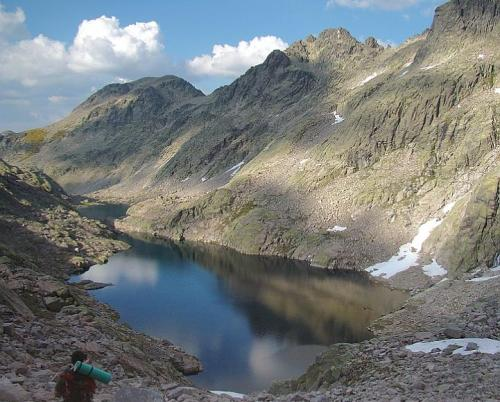
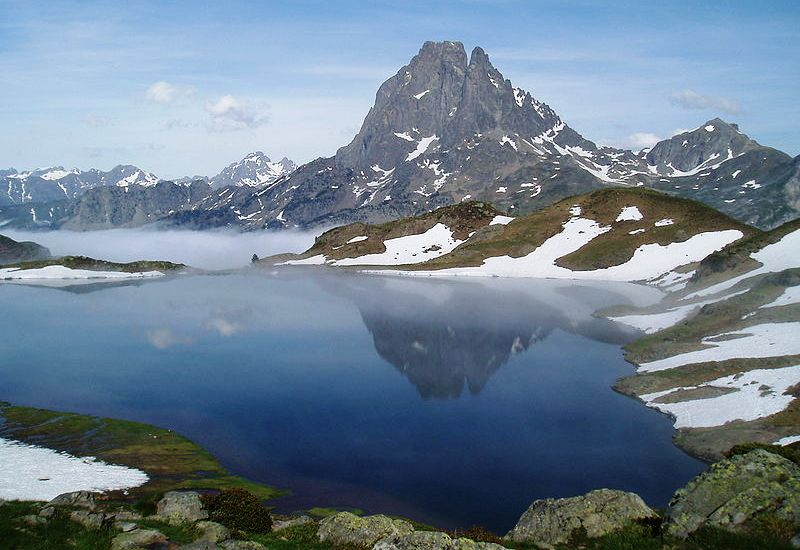
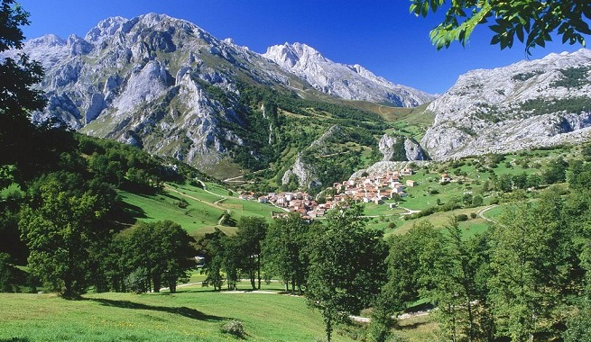

 La sierra de Gredos es una sierra de España perteneciente al Sistema Central, situada entre las provincias de Ávila, Cáceres, Madrid y Toledo. SU máxima altitud se da en la provincia de Ávila en el pico del Moro Almanzor a 2.592m, que divide los términos municipales de Zarpadiel de la Ribera y Candeleda. Está declarada parque regional. Gredos es una de las sierras más extensas del Sistema Central y está compuesta por cinco valles fluviales: Alto Tormes, Alto Alberche, Tiétar Oriental, Tiétar occidental y la Vera, y Valle del Ambroz.

Los Pirineos ocupan el norte de las regiones de Cataluña, Aragón y Navarra. Esta zona de alta montaña esconde algunos de
los más bellos paisajes. Una excelente manera de disfrutar a fondo de este entorno de naturaleza extrema y abrupta es mediante
el deporte. Y es que los Pirineos son un territorio muy vivo que nos incita permanentemente a participar de él. Si le gusta el
contacto con la naturaleza y el turismo activo es lo que de verdad le atrae los Pirineos españoles son el lugar apropiado para sus vacaciones.
 El Parque Nacional de los Picos de Europa se creó en 1918 como Parque Nacional de la Montaña de Covadonga, siendo el primer Parque Nacional de España. En 1995 se amplió a los tres macizos que constituyen los Picos de Europa cambiando el primitivo nombre por el actual. Sus 65.000 Ha. lo convierten en uno de los mayores espacios protegidos del Estado, abarcando terrenos que administrativamente pertenecen a tres comunidades autónomas: Asturias, Cantabria y Castilla-León.